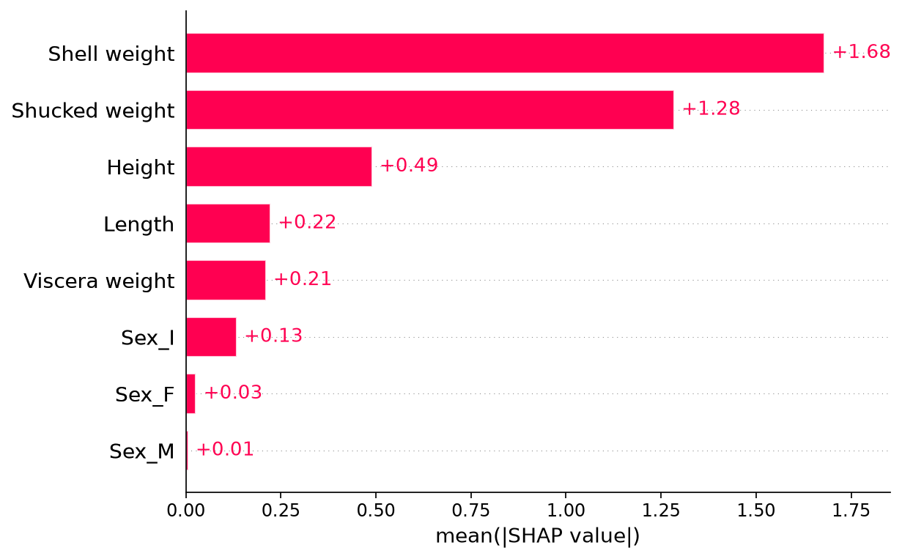
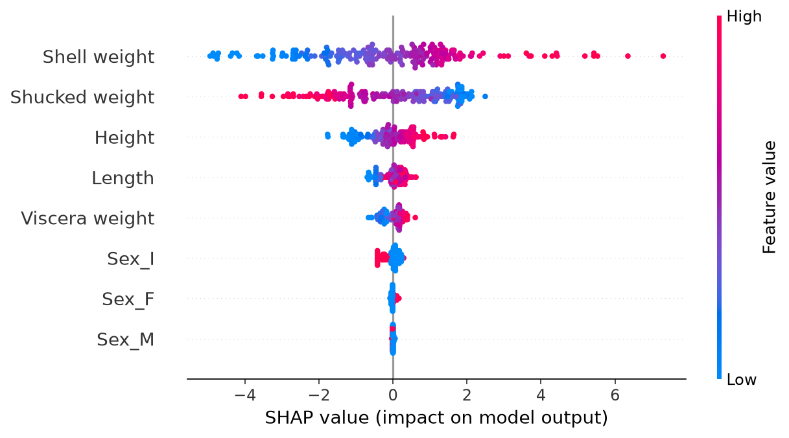
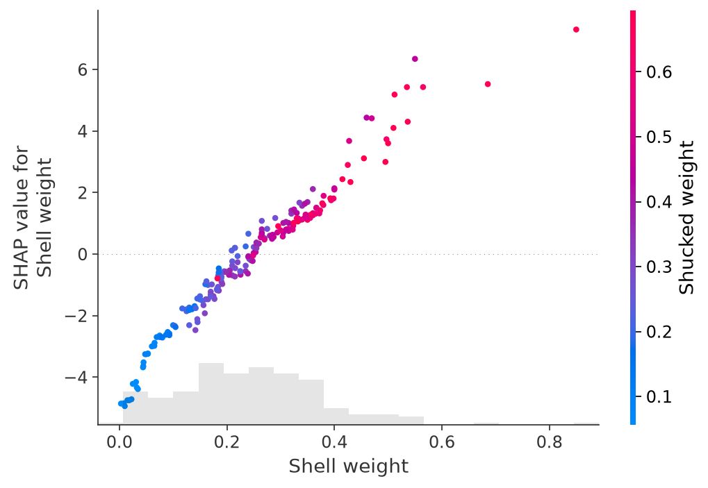

Read SHAP Plots One Question at a Time
Companion to A Data Odyssey’s video · Conor O’Sullivan
A waterfall plot answers a precise question: how do the feature contributions connect one prediction to its baseline? Once we have explanations for many rows, we can ask broader questions. Which features tend to make large contributions? Do high feature values usually push predictions upward? Does the relationship change across the feature’s range?
Each SHAP plot rearranges the same underlying contributions to answer one of those questions. We will keep the regressor, background, and 200 explained rows from Part 4 fixed. That way, changes in the display do not get confused with changes in the calculation.
A force plot compresses one explanation
A force plot places contributions around a prediction on a horizontal scale. Positive and negative contributions appear as opposing pushes. It is a compact way to see which features moved an output above or below its baseline, especially when a full waterfall would take too much space.
shap.initjs() # For interactive plots in a Jupyter notebook.
shap.plots.force(explanation[0])The force plot does not describe a physical force or a sequence of causal changes. It is another arrangement of the contributions already computed. The order of bars in either a force plot or a waterfall is a display choice, not one of the arrival orders used in the Shapley definition.
Stacking force plots puts many explanations next to one another. The standalone interactive force plot generated by our script contains 30 rows. Changing its ordering can reveal groups of similar explanations. Keep track of the ordering: neighboring columns need not be neighboring observations in the original dataset.
A bar plot asks which contributions are large on average
For each feature, take the absolute value of its contribution in every explained row, then average those magnitudes. The resulting mean absolute SHAP value describes the typical size of that feature’s contribution in this group of rows.
For a small example, suppose a feature contributes −2, +2, −1, and +1 rings. Its signed mean is zero, which hides the fact that it moves every prediction. Its mean absolute contribution is (2 + 2 + 1 + 1) / 4 = 1.5 rings.
shap.plots.bar(explanation, max_display=8)
mean_absolute = np.abs(explanation.values).mean(axis=0)

A long bar does not mean the feature generally raises predictions. Direction has been removed. Nor does it mean the feature improves predictive accuracy by that amount. The bar uses model outputs and their explanations; it does not compare them with observed ring counts.
The population matters as well. A summary of large, older shellfish may differ from a summary of small, young ones. When reporting this chart, name the rows it summarizes instead of calling it a universal ranking of importance.
A beeswarm keeps the individual contributions visible
The beeswarm adds back the variation hidden by the bar chart. Read one feature row at a time. Every dot represents one shellfish’s contribution for that feature. Its horizontal position is the SHAP value: left of zero lowers the prediction relative to the baseline; right of zero raises it.
The dot’s color carries a separate piece of information: the observed feature value. By default, blue means a low value and red means a high value for that feature. The small vertical offsets help overlapping dots fit on the page; they are not another model variable.


For shell weight, look for where the red and blue dots lie. In this fitted model, larger shell weights tend to have positive contributions, while smaller weights tend to have negative ones. This describes how the model allocates its predictions across the displayed rows.
The playlist also points out that shucked weight—the meat weight after removing the shell—can show an apparently opposite pattern. That is a reason to inspect the joint context, not to conclude that more meat makes a shellfish younger. Shell weight, meat weight, and size carry overlapping information.
A dependence plot follows one feature across its range
In a dependence plot, the horizontal axis is the actual feature value and the vertical axis is that feature’s SHAP value. This moves the input value from color onto its own axis, making slopes, bends, and changes in spread easier to see.
shap.plots.scatter(
explanation[:, "Shell weight"],
color=explanation[:, "Shucked weight"],
)

First trace the overall relationship between shell weight and its contribution. Then compare points at similar shell weights. Their different heights show that a similar shell weight can receive different contributions in different rows. Coloring by shucked weight helps us inspect one possible source of that variation.
This pattern can suggest model interactions, but a colored scatterplot alone does not isolate an interaction or prove a biological explanation. Correlated inputs and the masking rule also affect what is displayed. We can investigate a hypothesis further with model checks or explicit interaction calculations; we should not silently turn it into a conclusion.
Move between views without changing the question
| Question | Useful view |
|---|---|
| Why this prediction? | Waterfall or a single force plot. |
| Which features have large contributions in these rows? | Mean absolute SHAP bar chart. |
| How do direction and magnitude vary across rows? | Beeswarm. |
| How does one feature’s contribution vary with its value? | Dependence scatterplot. |
All these plots are generated by the same script. The beeswarm and scatter documentation describe their plotting options. Before adding more views, we need to examine what could make an otherwise attractive explanation misleading.